주요 발주처
서울교통공사
한국철도공사
인천교통공사
대구교통공사
(주)다원시스
우진산전
금천씨스템
샬롬ENG
철도차량 부품 납품
공조제어기 · 센서 2018–2019
- 서울교통공사 2호선 200량 신조전동차 공조제어기 및 센서 (다원시스)
- 석남선 공조제어기 및 센서 (다원시스)
- 인천 2호선 엔코더 (우진기전)
엔코더 · 공조제어기 2020
- 5·6호선 336량 엔코더 (우진산전)
- 대구교통공사 공조제어기
- 2·3호선 196량 공조제어기 및 센서류 (다원시스)
공조제어장치 2021
- 대곡소사선 공조제어기
- EMU150 객실 공조제어장치
- EMU150 운전실 제어장치
공조제어장치 · 인버터 2022
- 4호선 210량 공조제어장치 및 센서
- 에어컨 컴프레서 인버터
해외 납품
카자흐스탄 알마티 2010
(주)소명 발주 · 9건
초음파탐상장치, TM 시험기, CM 시험기, 계전기시험기, 배선용차단기시험기, 제동밸브시험기, 충방전기, 내압시험기, 방송장치시험기
인도네시아 자카르타 MRT 2017–2018
금천씨스템(주) · (주)우진산전 발주 · 6건
계전기시험기, 차단기시험기, 피뢰기시험기, 오일댐퍼시험기, ATS 간이시험기
검사장치 국내 납품 실적
2007년 ~ 2020년
| 연도 | 품명 | 수량 | 납품처 | 발주처 |
|---|---|---|---|---|
| 2020 | 인버터시험기 | 1 | 신정기지 | 서울교통공사 |
| 2020 | SIV시험기 | 1 | 신정기지 | 서울교통공사 |
| 2020 | 차단기시험기 | 1 | 신정기지 | 서울교통공사 |
| 2020 | 제동 종합시험기 | 1 | 신정기지 | 서울교통공사 |
| 2020 | 제동 밸브 시험기 | 1 | 신정기지 | 서울교통공사 |
| 2020 | 블록브레이크 시험기 | 1 | 신정기지 | 서울교통공사 |
| 2020 | 브레이크실린더시험기 | 1 | 신정기지 | 서울교통공사 |
| 2020 | 계전기시험기 | 1 | 군자기지 | 샬롬ENG |
| 2020 | 계전기시험기 | 1 | 이문기지 | 샬롬ENG |
| 2020 | 오일댐퍼시험기 | 1 | 공항철도 | 샬롬ENG |
| 2019 | 감속기시험기 | 1 | 부산기지 | 한국철도공사 |
| 2019 | 견인전동기시험기 | 1 | 도봉기지 | 서울교통공사 |
| 2019 | 점퍼연결기시험기 | 1 | 고덕기지 | 서울교통공사 |
| 2019 | 제동밸브류 시험장치 | 1 | 수서기지 | 서울교통공사 |
| 2019 | 오일댐퍼시험기 | 1 | 제천기지 | 한국철도공사 |
| 2019 | 주간제어기시험기 | 1 | 문산기지 | 한국철도공사 |
| 2019 | 위건드센서 시험기 | 1 | 고양기지 | 샬롬ENG |
| 2019 | 냉난방제어기 | 18 | 석남선 | (주)다원시스 |
| 2019 | 객실 온도 및 co2센서 | 32 | 석남선 | (주)다원시스 |
| 2019 | 객실 온도센서 | 32 | 석남선 | (주)다원시스 |
| 2019 | 외기 온도센서 | 8 | 석남선 | (주)다원시스 |
| 2018 | 제동장치제어기 시험장치(ECU) | 1 | 지축기지 | 서울교통공사 |
| 2018 | 방송장치시험기 | 1 | 창동기지 | 서울교통공사 |
| 2018 | 교류피뢰기시험기 | 1 | 덕하 | 우진산전 |
| 2018 | 주회로차단기시험기 | 1 | 덕하 | 우진산전 |
| 2018 | 배선용차단기시험기 | 1 | 덕하 | 우진산전 |
| 2018 | 변압기시험기 | 1 | 덕하 | 우진산전 |
| 2018 | 객실서비스장치시험기 | 1 | 덕하 | 우진산전 |
| 2018 | 차단기시험기 | 1 | 덕하 | 우진산전 |
| 2018 | 계전기시험기 | 1 | 덕하 | 우진산전 |
| 2018 | 방송기기시험기 | 1 | 덕하 | 우진산전 |
| 2018 | 도유기시험기 | 1 | 덕하 | 금천씨스템 |
| 2018 | 오일댐퍼시험기 | 1 | 덕하 | 금천씨스템 |
| 2018 | 차압변시험기 | 1 | 덕하 | 금천씨스템 |
| 2018 | 판토그래프시험기(겸용) | 1 | 덕하 | 금천씨스템 |
| 2018 | 주간/제동시험기 | 1 | 덕하 | 금천씨스템 |
| 2018 | 점퍼연결기시험기(겸용) | 1 | 덕하 | 금천씨스템 |
| 2018 | 보조전동기시험기 | 1 | 덕하 | 금천씨스템 |
| 2018 | 주공기/보조공기압축기시험기 | 1 | 덕하 | 금천씨스템 |
| 2018 | 내압시험기(10kva) | 1 | 덕하 | 금천씨스템 |
| 2018 | 오일댐퍼시험기 | 1 | 시흥기지 | 한국철도공사 |
| 2018 | 측출입문장치시험기 | 1 | 시흥기지 | 한국철도공사 |
| 2018 | 냉난방배전반 | 200 | 2호선 전동차 | (주)다원시스 |
| 2018 | 배전반(TC CAR) | 40 | 2호선 전동차 | (주)다원시스 |
| 2018 | 배전반(M1, M2 CAR) | 100 | 2호선 전동차 | (주)다원시스 |
| 2018 | 배전반(T1, T2 CAR) | 60 | 2호선 전동차 | (주)다원시스 |
| 2018 | CO2 및 온습도센서 | 400 | 2호선 전동차 | (주)다원시스 |
| 2018 | 온습도센서 | 400 | 2호선 전동차 | (주)다원시스 |
| 2018 | 외기온도센서박스 | 40 | 2호선 전동차 | (주)다원시스 |
| 2017 | 자분탐상기 | 1 | 지축기지 | 서울메트로 |
| 2017 | SIV제어유니트시험기 | 1 | 창동기지 | 서울메트로 |
| 2017 | 피뢰기시험기 | 1 | 김포경전철 | 우진산전 |
| 2017 | 차단기/배선용차단기시험기 | 1 | 김포경전철 | 우진산전 |
| 2017 | 계전기시험기 | 1 | 김포경전철 | 금천씨스템 |
| 2017 | 주간제어기시험기 | 1 | 김포경전철 | 금천씨스템 |
| 2017 | 내압시험기 | 1 | 김포경전철 | 금천씨스템 |
| 2017 | 집전기시험기 | 1 | 김포경전철 | 금천씨스템 |
| 2017 | 공기스프링탄성시험기 | 1 | 시흥기지 | 한국철도공사 |
| 2017 | 레벨링밸브시험기 | 1 | 시흥기지 | 한국철도공사 |
| 2017 | 팬터그래프시험기 | 1 | 시흥기지 | 한국철도공사 |
| 2017 | 구동기어조립체 무부하시험기 | 1 | 평내기지 | 한국철도공사 |
| 2017 | 계전기시험기 | 1 | 고양기지 | 한국철도공사 |
| 2017 | 계전기시험기 | 1 | 부산 | 한국철도공사 |
| 2017 | 접촉기시험기 | 1 | 부산 | 한국철도공사 |
| 2017 | 계전기크리너시험기 | 1 | 호남선 | 한국철도공사 |
| 2016.03 | 방송장치시험기 | 1 | 이문기지 | 한터기술 |
| 2016.03 | 주간제어기시험기 | 1 | 이문기지 | 메트로텍 |
| 2016.03 | 점퍼연결기시험기 | 1 | 이문기지 | 샬롬ENG |
| 2016.03 | 주회로차단기시험기 | 1 | 이문기지 | 샬롬ENG |
| 2016 | 객실서비스장치시험기 | 1 | 부발기지 | 미래일(주) |
| 2016 | ATS/ATC 종합시험기 | 1 | 부발기지 | 미래일(주) |
| 2016 | ATS/ATC 간이시험기 | 1 | 부발기지 | 미래일(주) |
| 2016 | 내압시험기 | 1 | 부발기지 | 미래일(주) |
| 2016 | SIV시험기 | 1 | 부발기지 | 창성엔지니어링 |
| 2016 | VVVF C/I 시험기 | 1 | 부발기지 | 창성엔지니어링 |
| 2016 | ATS/ATC종합시험기 | 1 | 부발기지 | 미래일(주) |
| 2016 | ATS/ATC간이시험기 | 1 | 부발기지 | 미래일(주) |
| 2016 | 충방전기 | 1 | 부발기지 | (주)미래로 |
| 2016 | 주간제어기시험기 | 1 | 이문기지 | (주)메트로텍 |
| 2016 | 방송장치시험기 | 1 | 이문기지 | 한터기술 |
| 2016 | 점퍼연결기시험기 | 1 | 이문기지 | 샬롬ENG |
| 2016 | 주회로차단기시험기 | 1 | 이문기지 | 샬롬ENG |
| 2016 | 계전기시험기 | 1 | 부산1호선다대기지 | 샬롬ENG |
| 2016 | TGIS시험기 | 1 | 시흥기지 | 미래일(주) |
| 2016 | 방송장치시험기 | 1 | 시흥기지 | 미래일(주) |
| 2016 | 전압/전류 검출센서 점검용시험기 | 1 | 수서기지 | 서울메트로 |
| 2016 | 추진제어장치시험기 | 1 | 부산1호선다대기지 | 우진기전 |
| 2016 | 점퍼카플러시험기 | 1 | 부산1호선다대기지 | 우진기전 |
| 2016 | 방송장치및표시기시험기 | 1 | 부산1호선다대기지 | 우진기전 |
| 2016 | 판타그래프시험기 | 1 | 부산1호선다대기지 | 샬롬 |
| 2016 | 계전기시험기 | 1 | 시흥기지 | 우진산전 |
| 2016 | 주간제어기시험기 | 1 | 시흥기지 | 우진산전 |
| 2016 | 충방전장치(충방전기) | 1 | 이문기지 | 우진산전 |
| 2016 | 충방전기 | 1 | 귤현기지 | 인천교통공사 |
| 2015 | 배선용차단기시험기 | 1 | 대구기지 | 샬롬ENG |
| 2015 | 점퍼연결기시험기 | 1 | 대구기지 | 우진기지 |
| 2015 | 차단기시험기 | 1 | 대구기지 | 우진기지 |
| 2015 | 방송기기/표시기 시험기 | 1 | 대구기지 | 우진기지 |
| 2015 | 집전장치시험기 | 1 | 대구기지 | 샬롬ENG |
| 2015 | 내압시험기 | 1 | 우이기지 | 금천씨스템 |
| 2015 | 계전기시험기 | 1 | 도봉기지 | 서울도시철도 |
| 2015 | 인버터제어카드시험기 | 1 | 군자기지 | 서울메트로 |
| 2015 | C/I장치 통합시뮬레이터 | 1 | 창동기지 | 서울메트로 |
| 2015 | 견인전동기시험기 | 1 | 시흥기지 | 샬롬ENG |
| 2015 | TM시험기 | 1 | 인천2호선 | 샬롬ENG |
| 2015 | TCMS 시험기 | 1 | 인천2호선 | 샬롬ENG |
| 2015 | SIV시험기 | 1 | 인천2호선 | 샬롬ENG |
| 2015 | VVVF시험기 | 1 | 인천2호선 | 샬롬ENG |
| 2014 | 공기압축기시험기 | 1 | 고양기지 | 금천씨스템 |
| 2014 | HVAC 시험기 | 1 | 분당기지 | 코리아징코리아 |
| 2014 | 비상끝단출입문시험기 | 1 | 분당기지 | 코리아징코리아 |
| 2014 | 코니컬고무스프링시험기 | 1 | 분당기지 | 코리아징코리아 |
| 2014 | 초음파탐상기 | 1 | 인천2호선 | 샬롬ENG |
| 2014 | SIV 시험기 | 1 | 도봉기지 | 샬롬ENG |
| 2013 | 내압시험기(10kva) | 2 | 광주차량기지 | 금천씨스템 |
| 2013 | 접촉기시험기 | 1 | 광주차량기지 | 금천씨스템 |
| 2013 | 계전기시험기 | 1 | 광주차량기지 | 금천씨스템 |
| 2013 | 견인전동기시험기 | 1 | 분당기지 | 진흥알에스 |
| 2013 | 주회로차단기시험기 | 1 | 분당기지 | 진흥알에스 |
| 2013 | 보조전동기시험기 | 1 | 분당기지 | 진흥알에스 |
| 2013 | 교류피뢰기시험기 | 1 | 분당기지 | 진흥알에스 |
| 2013 | 내압시험기 (3kva) | 1 | 분당기지 | 진흥알에스 |
| 2013 | 내압시험기 (10kva) | 2 | 분당기지 | 진흥알에스 |
| 2013 | 라인데리아시험기 | 1 | 분당기지 | 코리아징코리아 |
| 2013 | 점퍼연결기시험기 | 1 | 분당기지 | 코리아징코리아 |
| 2013 | 자분탐상기 | 1 | 분당기지 | 코리아징코리아 |
| 2013 | 변압기시험기 | 1 | 분당기지 | 코리아징코리아 |
| 2013 | 판타그래프시험기 | 1 | 분당기지 | 코리아징코리아 |
| 2013 | 계전기시험기 | 1 | 분당기지 | 코리아징코리아 |
| 2013 | 배선용차단기시험기 | 1 | 분당기지 | 코리아징코리아 |
| 2013 | 차단기시험기 | 1 | 분당기지 | 코리아징코리아 |
| 2013 | 방송장치시험기 | 1 | 분당기지 | 코리아징코리아 |
| 2013 | 제동기시험기수선 | 1 | 군자기지 | 서울메트로 |
| 2013 | 연결장치시험기 | 1 | 이문기지 | 샬롬ENG |
| 2013 | ATS결합도시험기수선 | 1 | 신정기지 | 서울메트로 |
| 2012 | 전동차시험기(고) | 1 | 평내기지 | 렘코 |
| 2012 | 주간제동시험기 | 1 | 평내기지 | 금천시스템 |
| 2012 | 차압변밸브시험기 | 1 | 평내기지 | 제이레일 |
| 2012 | 판토그래프시험기 | 1 | 평내기지 | 제이레일 |
| 2012 | 레벨링밸브시험기 | 1 | 평내기지 | 제이레일 |
| 2012 | 도유기시험기 | 1 | 평내기지 | 블루텍플러스 |
| 2012 | 오일댐버시험기 | 1 | 평내기지 | 블루텍플러스 |
| 2012 | 차단기시험기(고) | 1 | 평내기지 | 우진산전 |
| 2012 | 유압식자동연결기시험기 | 1 | 평내기지 | 진흥알에스 |
| 2012 | 공기압축기시험기 | 1 | 시흥기지 | 코레일 |
| 2012 | ATC종합시험기 | 1 | 분당기지 | 샬롬ENG |
| 2012 | SIV시험기 | 2 | 군자기지 | 서울메트로 |
| 2012 | SIV시험기 | 1 | 신정기지 | 서울메트로 |
| 2011 | 견인전동기시험기 | 1 | 제천기지 | 금천씨스템 |
| 2011 | MVMT시험 | 1 | 제천기지 | 금천씨스템 |
| 2011 | MVRH/MBRF 시험기 | 1 | 제천기지 | 금천씨스템 |
| 2011 | 점퍼시험기 | 2 | 지축,군자 | 우진기전 |
| 2011 | 진공밸브시험기 | 1 | 지축기지 | 우진기전 |
| 2011 | 서비스종합장치시험기 | 2 | 우진기전 | |
| 2011 | SIV 시험기 | 1 | 지축기지 | 샬롬 |
| 2011 | ATC시험기 | 1 | 지축기지 | 샬롬 |
| 2011 | 공기압축기시험기 | 1 | 분당기지 | 블루텍플러스 |
| 2011 | 공기압축기시험기 | 1 | 평내기지 | 대우엔지니어링 |
| 2011 | 보조공기압축기시험기 | 1 | 평내기지 | 대우엔지니어링 |
| 2011 | 보조전동기시험기 | 1 | 평내기지 | 렘코 |
| 2011 | 주회로차단기시험기 | 1 | 평내기지 | 렘코 |
| 2011 | 계전기시험기 | 1 | 평내기지 | 렘코 |
| 2011 | 차단기시험기 | 1 | 평내기지 | 렘코 |
| 2011 | 교류피뢰기시험기 | 1 | 평내기지 | 렘코 |
| 2011 | 방송장치시험기 | 1 | 평내기지 | 렘코 |
| 2010 | 충,방전기 | 1 | 평내기지 | 우진산전 |
| 2010 | SIV 시험기 | 1 | 군자기지 | 샬롬 |
| 2010 | 충전발전기 | 1 | 대전기지 | 샬롬 |
| 2010 | 전자식차단검사시험기 | 1 | 시흥기지 | 샬롬 |
| 2010 | PMC승강대도어엔진시험기 | 1 | 대전기지 | 금천시스템 |
| 2010 | PMC객실실린더시험기 | 1 | 대전기지 | 금천시스템 |
| 2010 | 내압시험기(3KVA) | 1 | 대전기지 | 금천시스템 |
| 2010 | SIV 시험기 | 1 | 경의선전동차사무소 | (주)대우건설 |
| 2009 | 에어콘시험기 | 1 | 철도대학 | 샬롬 |
| 2009 | 제동종합시험기 | 1 | 분당기지 | 샬롬 |
| 2009 | KTX TM시험기 | 1 | 철도대학 | 샬롬 |
| 2009 | 츌입문시험기 | 1 | 이문기지 | 코레일 |
| 2009 | 충,방전기 | 2 | 문산기지 | 샬롬 |
| 2009 | 주공기압축기시험기 | 1 | 김해기지 | 샬롬 |
| 2009 | 주전동기시험기 | 1 | 김해기지 | 샬롬 |
| 2009 | 점퍼시험기 | 1 | 김해기지 | 샬롬 |
| 2009 | 계전기시험기 | 1 | 김해기지 | 샬롬 |
| 2009 | 집전장치시험기 | 1 | 김해기지 | 샬롬 |
| 2009 | 차단기시험기 | 1 | 김해기지 | 샬롬 |
| 2009 | 충,방전기 | 1 | 김해기지 | 샬롬 |
| 2009 | CCU 시험기 | 1 | 김해기지 | 샬롬 |
| 2009 | CCU 시험기 이동식 | 1 | 김해기지 | 샬롬 |
| 2009 | CCU 지상해석장치 | 1 | 김해기지 | 샬롬 |
| 2009 | 주전동기시험기 | 1 | 문산기지 | 샬롬 |
| 2009 | 보조전동기시험기 | 1 | 문산기지 | 샬롬 |
| 2009 | 변압기 시험기 | 1 | 문산기지 | 샬롬 |
| 2009 | 주전동기작업대 | 16 | 문산기지 | 샬롬 |
| 2009 | 변압기저장대 | 4 | 문산기지 | 샬롬 |
| 2009 | 주전동기저장대 | 4 | 문산기지 | 샬롬 |
| 2009 | KTX제어대시험기 | 1 | 고양기지 | 금천시스템 |
| 2009 | KTX접촉기시험기 | 1 | 고양기지 | 금천시스템 |
| 2009 | KTX방송장치시험기 | 1 | 고양기지 | 금천시스템 |
| 2009 | KTX공기압축기시험기 | 1 | 고양기지 | 금천시스템 |
| 2009 | 보조공기압축기시험기 | 1 | 고양기지 | 금천시스템 |
| 2008 | 쵸파시험기 | 1 | 군자기지 | 서울메트로 |
| 2008 | 대차구동시스템 | 1 | 철도대학 | 샬롬 |
| 2008 | 점퍼시험기 | 1 | 철도대학 | 샬롬 |
| 2008 | 밀착연결기시험기 | 1 | 철도대학 | 샬롬 |
| 2008 | 제동실린더시험기 | 1 | 철도대학 | 샬롬 |
| 2008 | 고속전철판도구동장치 | 1 | 철도대학 | 샬롬 |
| 2008 | 출입문/PSD제어장치 | 1 | 철도대학 | 샬롬 |
| 2008 | EP 제동시험기수선 | 1 | 지축기지 | 서울메트로 |
| 2008 | 증류수제조기 | 1 | 김포기지 | 샬롬 |
| 2008 | 초음파세척기 | 1 | 김포기지 | 샬롬 |
| 2008 | 방송장치시험기 | 1 | 군자기지 | 서울메트로 |
| 2008 | 전력변환장치시험기 | 1 | 고양기지 | 코레일 |
| 2008 | 전력변환장치시험기 | 1 | 부산가야기지 | 코레일 |
| 2008 | 내압시험기 | 3 | 문산기지 | 샬롬 |
| 2008 | 이동식제동종합시험기 | 1 | 문산기지 | 샬롬 |
| 2008 | 제동종합시험기 | 1 | 분당기지 | 코레일 |
| 2008 | 출입문시험기 | 1 | 분당기지 | 샬롬 |
| 2008 | 보조공기압축기시험기 | 1 | 군자기지 | 서울메트로 |
| 2007 | 주전동기 시험기 | 1 | 신정기지 | 샬롬 |
| 2007 | 주 공기압축기시험기 | 1 | 신정기지 | 샬롬 |
| 2007 | 점퍼시험기 | 1 | 분당기지 | 샬롬 |
글로벌 파트너
해외 유수 기업의 제품을 국내에 공급합니다
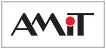
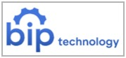
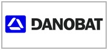
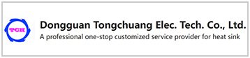
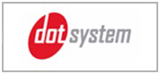
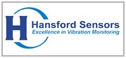
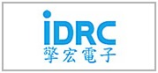
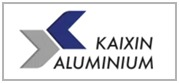
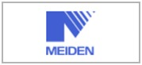
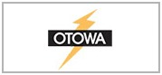
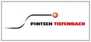
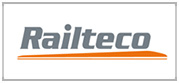
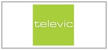
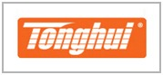
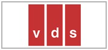
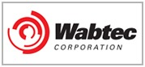
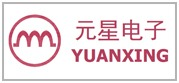